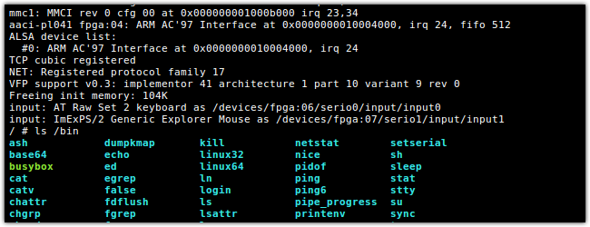
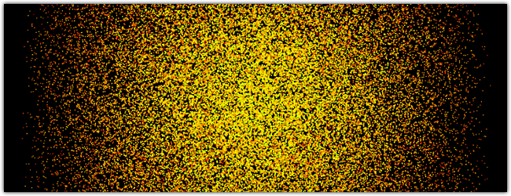
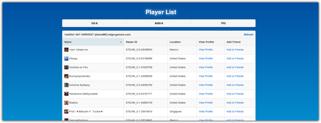

ginux

Linux in a browser, uses websockets to communicate with a virtual machine that runs a Linux Kernel with BusyBox. It uses term.js in the browser to emulate a xterm interface to the virtual machine.
three-gravity

A gravity particle simulation in three.js.
SCI
Game server control interface, a system for managing multiple game servers on multiple boxes.
Source Player List

Source Player List is a replacement for the players list in steam. It pulls data from gameME to display the servers and players.
PPRA

High School senior project for a mind controlled robotic arm, using Emotiv Headset and homemade robotic arm.
Original Theme by mattgraham